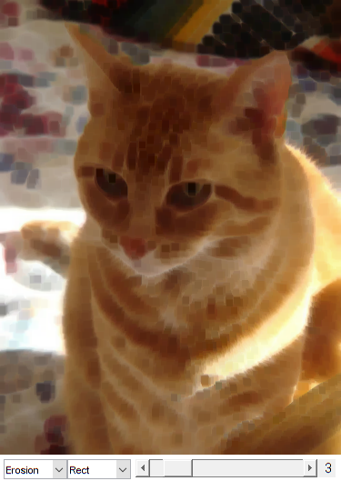

Erosion and Dilation
In this sample, you will learn how to apply two very common morphological operators: Erosion and Dilation. For this purpose, you will use the following OpenCV functions:
Sources:
- https://docs.opencv.org/3.2.0/db/df6/tutorial_erosion_dilatation.html
- https://github.com/opencv/opencv/blob/3.2.0/samples/cpp/tutorial_code/ImgProc/Morphology_1.cpp
- https://github.com/opencv/opencv/blob/3.2.0/samples/cpp/morphology2.cpp
- https://github.com/opencv/opencv/blob/3.2.0/samples/python/morphology.py
Contents
Morphological Operations
In short: A set of operations that process images based on shapes. Morphological operations apply a structuring element to an input image and generate an output image. The most basic morphological operations are: Erosion and Dilation. They have a wide array of uses, i.e.:
- Removing noise
- Isolation of individual elements and joining disparate elements in an image.
- Finding of intensity bumps or holes in an image
We will explain dilation and erosion briefly, using the following image as an example:

1) Dilation
This operations consists of convolving an image  with some kernel (
with some kernel ( ), which can have any shape or size, usually a square or circle. The kernel has a defined anchor point, usually being the center of the kernel. As the kernel is scanned over the image, we compute the maximal pixel value overlapped by and replace the image pixel in the anchor point position with that maximal value. As you can deduce, this maximizing operation
causes bright regions within an image to "grow" (therefore the name dilation).
), which can have any shape or size, usually a square or circle. The kernel has a defined anchor point, usually being the center of the kernel. As the kernel is scanned over the image, we compute the maximal pixel value overlapped by and replace the image pixel in the anchor point position with that maximal value. As you can deduce, this maximizing operation
causes bright regions within an image to "grow" (therefore the name dilation).
Take the above image as an example. Applying dilation we can get:

The background (bright) dilates around the black regions of the letter.
To better grasp the idea and avoid possible confusion, in this other example we have inverted the original image such as the object in white is now the letter. We have performed two dilatations with a rectangular structuring element of size 3x3.

(Left image: original image inverted, right image: resulting dilatation).
The dilatation makes the object in white bigger.
2) Erosion
This operation is the sister of dilation. It computes a local minimum over the area of given kernel. As the kernel is scanned over the image, we compute the minimal pixel value overlapped by and replace the image pixel under the anchor point with that minimal value.
Analagously to the example for dilation, we can apply the erosion operator to the original image (shown above). You can see in the result below that the bright areas of the image (the background, apparently), get thinner, whereas the dark zones (the "writing") gets bigger.

In similar manner, the corresponding image results by applying erosion operation on the inverted original image (two erosions with a rectangular structuring element of size 3x3):

(Left image: original image inverted, right image: resulting erosion).
The erosion makes the object in white smaller.
References
- "Learning OpenCV" by Bradski and Kaehler.
Code
function varargout = morphology_demo_gui1(im) % load source image if nargin < 1 src = imread(fullfile(mexopencv.root(),'test','cat.jpg')); elseif ischar(im) src = imread(im); else src = im; end % create the UI h = buildGUI(src); if nargout > 0, varargout{1} = h; end end function onChange(~,~,h) %ONCHANGE Event handler for UI controls % retrieve current values from UI controls ksize = round(get(h.slid, 'Value')); funcIdx = get(h.pop(1), 'Value'); shapeIdx = get(h.pop(2), 'Value'); set(h.txt, 'String',sprintf('%2d',ksize)); % options (structuring element shape and morphological operation) shapes = {'Rect', 'Cross', 'Ellipse'}; if ~mexopencv.isOctave() fhandles = {@cv.erode, @cv.dilate, @(I,varargin)I}; else %HACK: Octave doesnt support function handles to package methods fhandles = { ... @(varargin) cv.erode(varargin{:}), ... @(varargin) cv.dilate(varargin{:}), ... @(I,varargin) I }; end % apply the specified morphological operation elem = cv.getStructuringElement('Shape',shapes{shapeIdx}, ... 'KSize',[ksize ksize]*2+1, 'Anchor',[ksize ksize]); dst = feval(fhandles{funcIdx}, h.src, 'Element',elem); % show result set(h.img, 'CData',dst); drawnow; end function h = buildGUI(img) %BUILDGUI Creates the UI % parameters ksize = 3; max_ksize = 21; sz = size(img); sz(2) = max(sz(2), 250); % minimum figure width % build the user interface (no resizing to keep it simple) h = struct(); h.src = img; h.fig = figure('Name','Dilation/Erosion Demo', ... 'NumberTitle','off', 'Menubar','none', 'Resize','off', ... 'Position',[200 200 sz(2) sz(1)+29]); if ~mexopencv.isOctave() %HACK: not implemented in Octave movegui(h.fig, 'center'); end h.ax = axes('Parent',h.fig, 'Units','pixels', 'Position',[1 30 sz(2) sz(1)]); if ~mexopencv.isOctave() h.img = imshow(img, 'Parent',h.ax); else %HACK: https://savannah.gnu.org/bugs/index.php?45473 axes(h.ax); h.img = imshow(img); end h.pop(1) = uicontrol('Parent',h.fig, 'Style','popupmenu', ... 'Position',[5 5 70 20], 'String', {'Erosion','Dilation','-None-'}); h.pop(2) = uicontrol('Parent',h.fig, 'Style','popupmenu', ... 'Position',[75 5 70 20], 'String',{'Rect','Cross','Ellipse'}); h.slid = uicontrol('Parent',h.fig, 'Style','slider', 'Value',ksize, ... 'Min',1, 'Max',max_ksize, 'SliderStep',[1 5]./(max_ksize-1), ... 'Position',[150 5 sz(2)-150-20-5 20]); h.txt = uicontrol('Parent',h.fig, 'Style','text', 'FontSize',11, ... 'Position',[sz(2)-20-5 5 20 20], 'String',num2str(ksize)); % hook event handlers, and trigger default start set([h.slid, h.pop], 'Callback',{@onChange,h}, ... 'Interruptible','off', 'BusyAction','cancel'); onChange([],[],h); end